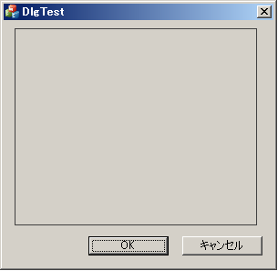
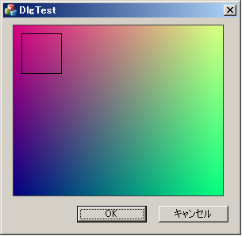

Visual studio メモ 5 --CDC::SetPixelが遅いのを何とかする--
問題
- MFCの**viewやら, Picture Controlに絵を描くとき、各pixelにアクセスしたいことが非常に多くある
- MSDNを調べるとCDC::SetPixel や CDC::GetPixelを使えといわれる
- CDC::SetPixel や CDC::GetPixelは、驚くほど遅い
- CBitmap::CreateBitmapでCBitmapを作ればいいのでは？ ←モノクロしか作れない
解決策
- CreateDIBSection でデバイスに依存しないBitmapを作って、各ピクセルに直接アクセスする
- CDC::BitBltでCDCに書き込む
例 - DialogのPictureControlに絵を描く
- 1. Dialogベースのプロジェクトを作成
- 2. Picture Controlを真ん中に配置して、IDをIDC_MY_PICT_CONTROLとしておく

//A. picture ControlのCWndを取得
CWnd *pcWnd = GetDlgItem(IDC_MY_PICT_CONTROL );
CDC *pcDC = pcWnd->GetDC(); //pcDC->SetPixel( 3, 4, RGB(10, 10, 10)); これが速ければ何の問題もないのに・・・
//B. picture controlのサイズ(Width, Height)を取得する
CRect rect;
pcWnd->GetWindowRect( rect );
const int W = rect.right - rect.left;
const int H = rect.bottom- rect.top ;
//C. デバイスに依存しないカラービットマップを作成
BITMAPINFO binfo;
ZeroMemory( &binfo, sizeof(binfo));
binfo.bmiHeader.biSize = sizeof(BITMAPINFOHEADER);
binfo.bmiHeader.biBitCount = 32;//1pixel 32-bit (4-byte)
binfo.bmiHeader.biPlanes = 1;
binfo.bmiHeader.biWidth = W;
binfo.bmiHeader.biHeight = H; //ここが負だと、左上が原点になる(正なら左下が原点)
byte *bmpbits; //この byte *bmpbits に HBITMAP の中身へのポインタが入る
HBITMAP hbmp = CreateDIBSection( NULL, &binfo, DIB_RGB_COLORS, (void **)(&bmpbits), NULL, 0);
//D. hbmpに関連付けた CBitmapと、CDCを作成
CBitmap *cbmp = CBitmap::FromHandle( hbmp );//hbmpをCBitmap cbmpに変換
CDC cbmpDC;
cbmpDC.CreateCompatibleDC( pcDC ); //cbmpに関連づけたCDCを準備
CBitmap *oldBmp = cbmpDC.SelectObject( cbmp );
//E. hbmp(cbmp)に ポインタから (bmpbits) から高速にアクセスできる
for( int y = 0; y < H; ++y)
for( int x = 0; x < W; ++x)
{
int idx = (x + y * W ) * 4;
bmpbits[ idx + 0 ] = 128 ; //b channel
bmpbits[ idx + 1 ] = min(255, x); //g channel
bmpbits[ idx + 2 ] = min(255, y); //r channel
}
//F. CDC cbmpDCからもアクセスできて結構便利
cbmpDC.MoveTo( 10, 10);
cbmpDC.LineTo( 10, 60);
cbmpDC.LineTo( 60, 60);
cbmpDC.LineTo( 60, 10);
cbmpDC.LineTo( 10, 10);
//G. pcDCにhbmpをコピーする
pcDC->BitBlt( 1,1, W-2, H-2, &cbmpDC, 0,0,SRCCOPY);
//H. 解放を忘れない
cbmpDC.SelectObject( oldBmp );
DeleteDC( cbmpDC );
DeleteObject( hbmp );//HBITMAPを解放
これを実行するとこんな感じ...

若干長くなったけど、やっていることは、
- A. Picture ControlのCDC取得
- B. Picture Controlのサイズ取得
- C. デバイスに依存しないカラービットマップ HBITMAP hbmp を作成
- D. hbmpを CBitmap cbmpに変換し、cbmpに関連づけたCDCを生成 (MFCのこういう作業は本当に面倒)
- E. hbmpの各bitに、byte *bmpbitsを利用して高速にアクセス (SetPixelより断然速い)
- F. hbmpにCDCを利用して線を描画
- G. Picture control に BitBltを利用してhbmpをコピー (hbmpを変換したcbmpを関連づけたCDCを利用している(MFC・・・))
- H. 解放 （byte *bmpbitsをdelete[]とかはしちゃだめ）
MFCを使ってると、単純なことがしたいだけなのに、不等にコードが長くなって、醜くなる。
他によい方法があるといいんだけど・・・